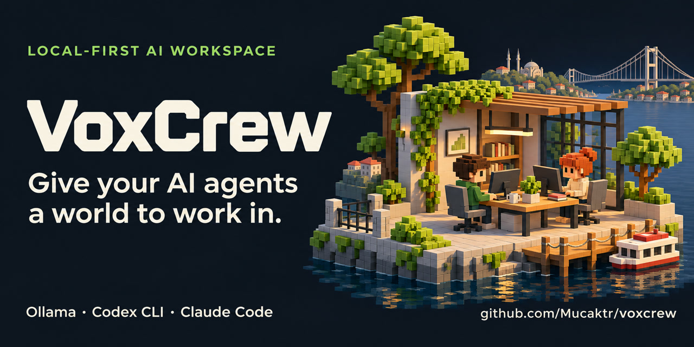

A local-first AI workspace
Give your AI agents a world to work in.
Bring your models, give your crew a task, and follow the work in a voxel city.
Works with the models you bring
- Ollama
- Codex CLI
- Claude Code
- OpenAI-compatible endpoints
01 / A crew, with a job to do
A little world.
Real work underneath.
Made for individual developers and AI tinkerers who want to see their agents at work, inspect the result and decide what happens next.
Pick a brain. Build your crew.
Connect a local model or an installed CLI. Give each agent a role and review its tools and file permissions.
Give the work a shape.
Start with one task, or use YAML workflows with parallel branches, your approval and a review loop.
Keep the thread of the work.
Inspect the run trace, pause or resume, retry a step and set a budget. A local graph keeps shared context you can review.
02 / A closer look
See the work.
Explore the world.
Recorded in the public free edition. Edited clips show specific flows; they are not performance benchmarks.
A little time between tasks.
Catch an anchovy, take a tea break and feed the seagulls. A closer look at the small interactions around the city.
Three cities. One crew.
Istanbul’s landmarks, Cappadocia’s fairy chimneys and London’s riverside. Istanbul and Cappadocia are available from the start; London unlocks with a passport stamp.
From a task to its trace.
A real 76-second qwen3:4b run, with 1,023 tokens reported by the app. Also shows model selection, the workflow editor and memory; scheduling and export controls are previews.
03 / Your first result
Start small.
Make it your own.
Install the prerequisites, clone the repository and run the launch script. The first launch builds the interface; there is no prebuilt desktop installer yet.
- Git
- uv
- Node.js 20+
Full setup instructions
The app opens without a model. Running an agent requires a working connection. Ollama, Codex CLI, Claude Code and compatible APIs have different tool behavior. Hermes is optional. Compare connections ↗
A small task to start with
- Complete the local 18+ confirmation and setup wizard. Connect a model in Connections.
- Assign it to Researcher, review permissions, then press Ctrl + K.
- Paste the example below. Open the completed run to inspect the result and trace.
Summarize this note in three bullets. Use only this text; do not browse or modify files.
The prototype is ready. Alex will check the setup guide. Sam will record the demo on Thursday.
Local app. Your model choice.
VoxCrew runs on your computer and needs no VoxCrew account. Hosted models and network tools can send data outside your computer. Provider fees and quotas are not included.
A focused free edition.
Two active agents, five saved custom workflows, and Istanbul + Cappadocia from the start. London unlocks with your first passport stamp. Other edition limits are in the README.
Permissions stay important.
This is a single-user app with no remote login. Keep it on loopback and review agent permissions. Budgets and approval steps help you supervise work; they do not replace provider or tool safeguards.

Made to be explored
Bring your crew.
Help shape its world.
Try a small task and tell us where it worked, where setup got stuck, or what you would build next. Early feedback helps shape the next release.